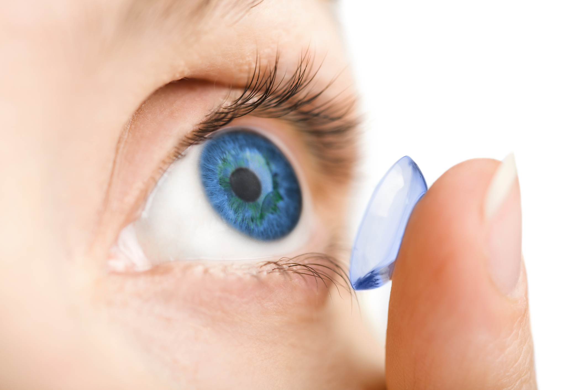
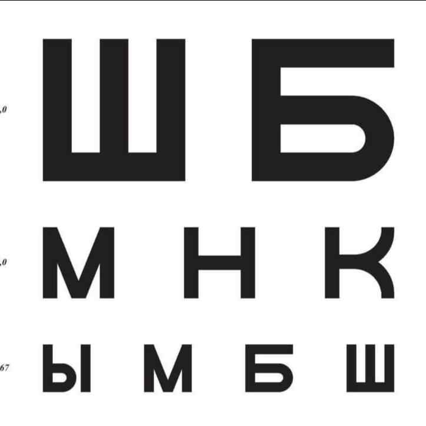

Eye health is crucial for overall well-being. Regular eye examinations are essential to detect and address vision issues, such as nearsightedness, farsightedness, and astigmatism. Additionally, maintaining a balanced diet rich in vitamins and minerals, protecting the eyes from harmful UV rays with sunglasses, and practicing good eye hygiene contribute to long-term eye health. Remember to take breaks during extended screen time, stay hydrated, and promptly address any discomfort or changes in vision with professional guidance. Prioritizing eye health promotes clear vision and helps prevent potential eye conditions.
About lenses & Eye Health

Contact Lenses
Contact lenses are a popular alternative to traditional eyeglasses, offering a discreet and flexible way to correct vision. They come in various types, catering to different vision needs and preferences:
- Daily Wear Lenses: Designed for daily use and removed before sleep. They are convenient and require minimal maintenance.
- Extended Wear Lenses: Can be worn continuously, including during sleep, for an extended period. Consultation with an eye care professional is essential for proper usage.
- Toric Lenses: Specifically crafted to correct astigmatism, providing clear and sharp vision for individuals with this refractive error.
- Colored or Cosmetic Lenses: Offer an opportunity to change or enhance eye color for aesthetic purposes. Available with or without prescription.

Eye Health
Maintaining optimal eye health is crucial for overall well-being. Various practices contribute to preserving and enhancing vision while preventing potential issues:
- Regular Eye Exams: Schedule comprehensive eye exams to monitor vision changes, detect eye diseases, and ensure timely intervention.
- Healthy Diet: Consume a balanced diet rich in vitamins and minerals, including those beneficial for eye health, such as vitamin A, C, and omega-3 fatty acids.
- Protective Eyewear: Use appropriate eyewear, such as sunglasses with UV protection, safety goggles, or sports glasses, to shield the eyes from harmful elements and injuries.
- Blinking Breaks: Take regular breaks, blink frequently, and follow the 20-20-20 rule to reduce eye strain during prolonged screen use.
- Proper Lighting: Ensure adequate lighting when reading or working to minimize eye strain and create a comfortable environment.
- Hygiene Practices: Practice good hygiene when using contact lenses, including proper cleaning, storage, and adherence to recommended wearing schedules.